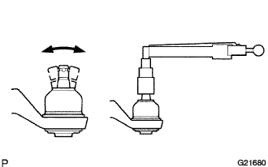

FRONT LOWER SUSPENSION ARM > INSPECTION |
| 1. INSPECT FRONT NO. 1 SUSPENSION ARM LOWER SUB-ASSEMBLY LH |
 |
As shown in the illustration, move the ball joint stud back and forth 5 times before installing the nut.
Using a torque wrench, turn the nut continuously at a rate of 3 to 5 seconds per turn and take the torque reading on the fifth turn.
Check for any cracks and grease leaks on the ball joint dust cover.